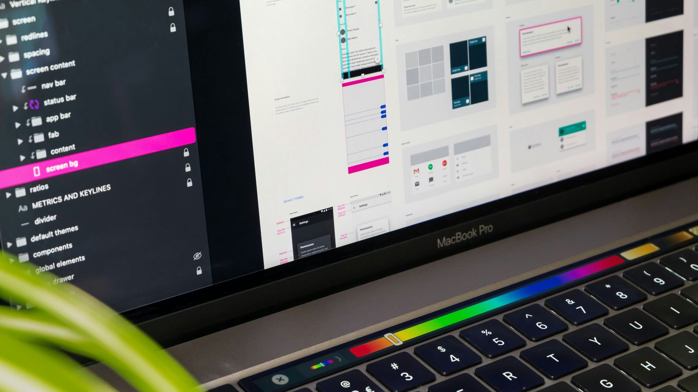

Guía de diseño de experiencia e interfaces
Un buen diseño es el que no necesita explicación.
Aprende qué es UX/UI, qué principios la guían y cómo se diseña una interfaz que la gente entiende a la primera.

¿Por dónde empezar?
- UX vs. UI UX es cómo se siente usar algo. UI es cómo se ve y cómo se toca.
- Principios Las 8 reglas de Shneiderman y las 10 heurísticas de Nielsen, con ejemplos.
- Proceso De la investigación a la prueba con usuarios: las etapas de un buen diseño.
- Herramientas Programas para crear, probar y compartir ideas de diseño.